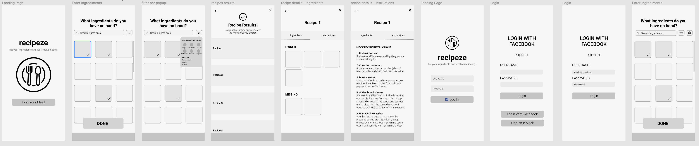

Since college students do not have much time to prepare meals, they need the ability to find recipes that will fit their dietary restrictions, ingredient restrictions, and time constraints.
Purpose
Since many college students living on campuses have very busy schedules with a limited amount of time to prepare meals, many of them resort to not eating or purchasing takeout meals. Meal.ly provides the most convenience for college students by providing them meals with the ingredients they currently have and with the proper time constraints to accommodate for the busy schedule.
Background
Many college students nowadays struggle with finding meals to eat due to their busy schedule. Some also prefer not eating the same meal everyday. At many Universities, students may find it difficult to find a reasonable transportation to a grocery store for ingredients. As a result of many students eating late, dining options are limited as dining halls are closed, and takeout food tends to be expensive.
After experiencing life on a college campus and learning about the experiences of those around me, it is clear that college students need a way to make use of their current ingredients to avoid the unnecessary transportation. Especially with a busy schedule and lack of a car, visiting a grocery store may be difficult for many.
Need-Finding and Research
Upon creating this application, we decided to narrow our audience to a specific group in which this app would greatly benefit.
Due to various transportation, cooking, and financial drawbacks, we figured that a cooking app would significantly benefit college students.
After speaking to various college students and learning from our own experiences, we figured that along with learning how to cook, the various ingredients needed to cook a specific recipe and the transportation to a grocery store that has the ingredients was the issue at hand.
This would then lead to us discovering the Spoonacular API and the ability it has for users to enter ingredients, dietary restrictions, and even time filters for users to cater to the needs of users.
User Personas
For the first user persona, we used a person that was currently in their first year of college that struggled with cooking since it was their first time cooking for themselves. Since they only knew how to prepare a couple meals, they needed a way to utilize their ingredients more effectively to create new recipes.
For the second user, we used a student that was tired of cooking the same meals every single day and would resort to excessively spending money for takeout meals. Therefore, they needed a way to cook different meals at home so they would not feel the need to spend money.
For the third user, we used a student that spent a majority of their day studying and would not spend time cooking because they felt that cooking would require too much time and they may need to visit a grocery store to purchase ingredients they may be missing. Therefore, this would result in them not eating. Meal.ly would then help them prepare new meals that meet their time constraints and ingredient availability constraints.
Storyboard
After creating some user personas, we decided to design story boards that would help demonstrate specific use cases for the application.
This storyboard demonstrated a specific use case to design our application around.
Paper Prototype
This specific paper prototype addressed the story boards along with user personas. This prototype includes features such as filtering, dietary restrictions,
recipe descriptions, and page layout.
Low-Fidelity Wireframes

Our team first started by creating some low fidelity wireframes of the basic MVP of what the project should complete at the bare minimum.
In our case, it was an app in which user’s enter ingredients and it generates recipes.
High-Fidelity Wireframes
We generated various high-fidelity wireframes that targeted ease of use, including scanning ingredients.
This actually proved to be a difficult aspect of the design process because we also had to ensure our API accurately applied the filters we used.
Along with doing user-testing, we figured that the easiest way to present this app was to provide minimal filters, but the most important ones, including vegetarian, gluten free, nut free, and time constraints.
Demo
Final Product and Takeaways
In terms of the completed product, we created an app that that allowed users to generate recipes based on ingredients they already have and provide detailed instructions for each recipe along with images of the completed product through the Spoonacular API.
The challenging aspect of this project was specifically narrowing down the target population for this application as it required many user stories and needfindings.
Along with that, the challenging aspect was the backend API calls as we wanted to avoid causing too many calls to the Spoonacular API.